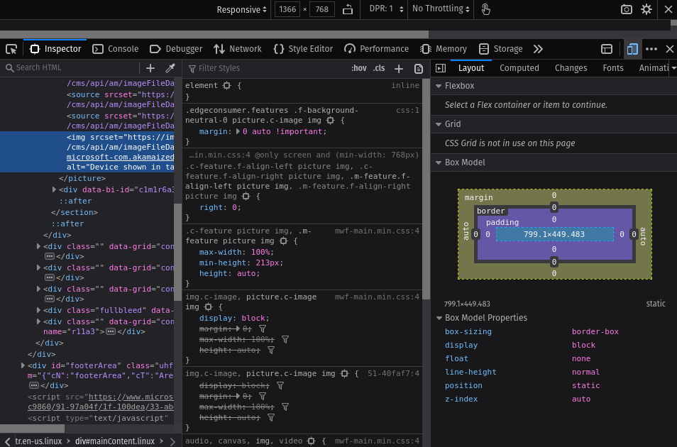

Use the navigation buttons or the arrow keys to proceed to the remaining slides.
F
You can also press
>>F
<< on your keyboard to show your presentation in fullscreen
mode.
This presentation is best explored with up-to-date web browsers.
What is Responsive Web Design?
It is the use of HTML and CSS to automatically resize, hide, shrink, or enlarge, a website, to
make it look good on all devices.
Enabling Responsiveness
The <meta> tag with viewport and content attributes will make the page
responsive.
Web Developer Tools

All browsers have responsive design features that can be accessed via
devtools.
Responsive CSS
Implementing responsiveness in CSS takes different properties that help an
element adapt to a screen size.
Responsive Images
The HTML <picture> element allows you to define different images for different
browser window sizes.
Media Queries
These CSS declarations are useful when you want to modify your site or app depending on a device's
general type (such as print vs. screen) or specific characteristics and parameters (such as screen
resolution or browser viewport width).
Targeting Specific Media Types
@media print { ... }
@media screen, print { ... }
Screen Size Breakpoints
/* Extra small devices (phones, 600px and down) */
@media only screen and (max-width: 600px) {...}
/* Small devices (portrait tablets and large phones, 600px and up) */
@media only screen and (min-width: 600px) {...}
/* Medium devices (landscape tablets, 768px and up) */
@media only screen and (min-width: 768px) {...}
/* Large devices (laptops/desktops, 992px and up) */
@media only screen and (min-width: 992px) {...}
/* Extra large devices (large laptops and desktops, 1200px and up) */
@media only screen and (min-width: 1200px) {...}
Orientation Media Queries
@media only screen and (orientation: landscape) {
body {
background-color: lightblue;
}
}
Hiding Elements
/* If the screen size is 600px wide or less, hide the element */
@media only screen and (max-width: 600px) {
div.example {
display: none;
}
}
 mjsolidarios@wvsu.edu.ph |
https://github.com/mjsolidarios
mjsolidarios@wvsu.edu.ph |
https://github.com/mjsolidarios